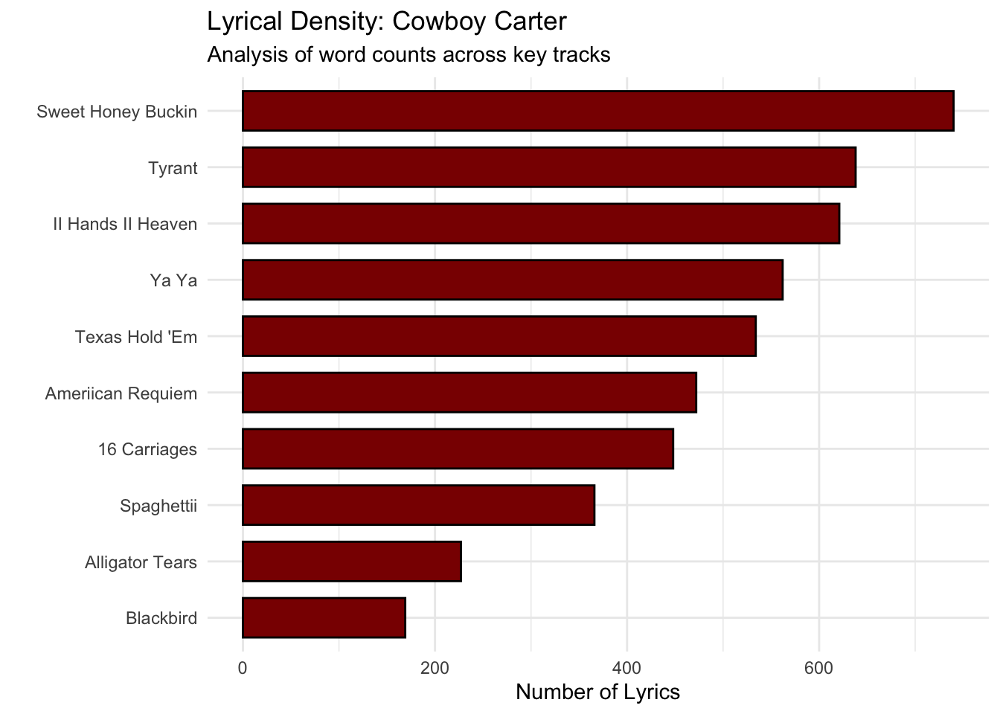

# 1. Load the library we need for plotting
library(ggplot2)
# Insert Cowboy Carter Lyric Data
songs <- c("Ameriican Requiem", "Blackbird", "16 Carriages", "Texas Hold 'Em",
"Spaghettii", "Alligator Tears", "Ya Ya", "II Hands II Heaven",
"Tyrant", "Sweet Honey Buckin")
lyrics <- c(472, 169, 448, 534, 366, 227, 562, 621, 638, 740)
initials <- c("AR", "B", "16C", "TH", "S", "AT", "Y", "HH", "T", "SHB")
# Create your data frame
df <- data.frame(songs, lyrics)
#Create Plot
ggplot(df, aes(x = reorder(songs, lyrics), y = lyrics)) +
geom_bar(stat = "identity", fill = "#8B0000", color = "black", width = 0.7) +
coord_flip() +
theme_minimal() +
labs(
title = "Lyrical Density: Cowboy Carter",
subtitle = "Analysis of word counts across key tracks",
x = "",
y = "Number of Lyrics"
)

Goal: The goal of this project was to visualize the creative
magnitude and density of Beyoncé’s Cowboy Carter. By mapping the lyrical
density of key tracks, I wanted to showcase how this album reclaimed the
Country genre not just through sound but through an intentional, dense
narrative of Black history and resilience.
Product: I created a Horizontal Bar Plot. Unlike a vertical chart,
the horizontal orientation allows for a more readable, list-like
comparison of tracks, mirroring the tracklist of a vinyl record. I used
a deep maroon and black aesthetic to pay homage to the rodeo and outlaw
themes of the album while maintaining a clean, analytical look.
Data: I mapped the x-axis to the specific Number of Lyrics (ranging
from 169 to 740 words) and the y-axis to the Track Titles. I used an
ordering transformation to sort the tracks from the most acoustic to the
most lyrically dense, allowing for a clear visual crescendo.
Interpretation: What I discovered during this process was that the
album follows a distinct creative expansion. By starting with the
intimate foundations of Blackbird (169 words), the data shows a steady
climb toward the high-energy, multi-layered storytelling of Sweet Honey
Buckiin (740 words). This visualization reveals that the album’s
complexity isn’t random; it is a calculated build-up that honors the
depth of Black songwriting.